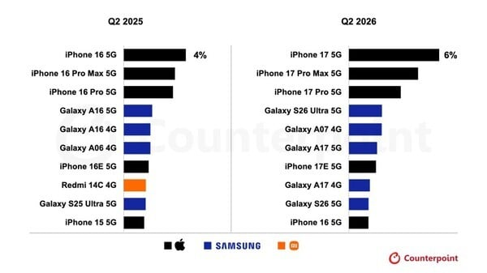
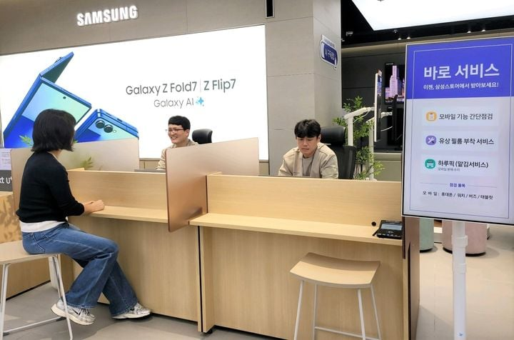
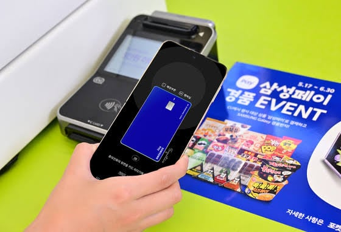

1. 원래부터 겔럭시는 저렴이만 팔렸음. 그나마 26부터 최초로 10위권에 올라온거.

2. 해외에는 삼성 서비스 센터 같은게 없음. 대부분 위탁임.

3. 당연히 삼성 페이 이용률 이라고 집계도 민망할 만큼 삼성페이가 차별화된 매력이 아님. 구글페이를 쓰면 되긴 하지만. 그거조차 해외에서는 대도시 이외에는 이용률이 처참함.
4. MZ들 사이에서 geek을 제외 하고는 그냥 애플 생태계에 매몰 되어 있음.
5. 아이폰 듀오 1999$ 겔럭시폴드 1899$
가격 차이도 해외에선 큰 차이 안남.
× 나 삼성전자 주주임. 겔럭시만 평생씀.
팀쿡 늙은 게이 변태
시진핑 종신 독재자, 살인마
개인적으로 대한민국 국민이라면
세계 순위권에서 경쟁하는 굴기의 휴대폰 제조업체가 내 조국에 있다는 것에 감사하고
삼성휴대폰 써야한다고 생각함.
번외편으로 현대차도 있음.
(지난달에 맥스튜디오 산건 비밀)